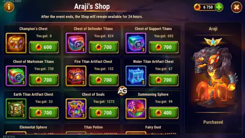
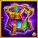
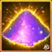

What Is the Titan Power Event — and Why Does It Matter?
The Titan Power Event lasts three days. During those three days, the game rewards you with a special currency called Champion Coins just for playing as you normally would. You'll also collect items like the Titan Weapon Artifact and the Fire Crown — two resources that are very important for upgrading Araji directly.
What makes this event extra special is that it runs at the same time as the Blessing of Worlds event — read our Blessing of Worlds guide here. That means while you're playing, you can also be farming Soul Stones and upgrade items for Light and Dark Titans at the same time. Two events, one effort. If you know how to take advantage of this window, you will save a lot of time in your progression.

Who Is Araji? Why Should You Care About This Titan?
Araji is the Super Titan of Fire in Hero Wars Alliance. If you're building a Fire team, Araji is pretty much the king. He works incredibly well alongside the other Fire Titans: Ignis, Vulcan, Asherona, and Moloch. And recently, there's a new titan who has insane synergy with him — Alecto. Read our Alecto guide here to understand how powerful this combination can be.

But here's the part that surprises most beginners: Araji is also a monster in the Dungeon. You know how hard it is to survive deep in the dungeon when you're just starting out — your tanks fall fast, the enemies hit hard, and you run out of floor progress quickly. Araji can literally carry your entire Fire team through many battle rooms on his own, dealing massive damage against Earth enemies. Even if your tanks aren't strong yet, a well-leveled Araji buys you time and floors that you simply wouldn't reach otherwise. Don't underestimate him.
And speaking of dungeon progression — make sure to read my guide on how to earn infinite gold in the dungeon, because that gold is going to be essential for everything I'm about to recommend.
Also, don't forget to check the full Araji Titan Guide — especially now that Alecto brings even more synergy to his Fire element team.
What to Buy in Araji's Shop — Beginner Priority List
This is the most important part of this guide. I want to be honest with you: at the beginning it's very tempting to buy a little bit of everything. But if you do that, you end up with nothing powerful. Focus is everything in Hero Wars Alliance. Here is my recommended priority order for beginners:
-
 #1 — Araji Soul Stones (Absolute Priority)
#1 — Araji Soul Stones (Absolute Priority)
Your number one goal in this shop is to collect as many Araji Soul Stones as possible to push him to Absolute Star (the maximum star level). Every star you add to Araji increases his power dramatically, and reaching Absolute Star unlocks his full potential for dungeon battles.
Alexandre's tip: Once you have your first titan at 6 stars, the game unlocks the Titan Soul Shop, where you can spend extra Soul Stones (that you can't use anymore) as coins to buy helpful items like Titan Potions and Gold. The more Soul Stones you collect — especially in the dungeon — the more coins you'll have in that shop. So getting Araji to Absolute Star early is a smart move on multiple levels. The dungeon is your best source of daily Soul Stones, so the more floors you complete, the more you earn. That's another reason to follow the dungeon gold guide.
-
 #2 — Defender Titan Box (Sigurd, Angus, Moloch)
#2 — Defender Titan Box (Sigurd, Angus, Moloch)
After Araji, focus on the box that contains the defender titans. Your top priorities here are: Sigurd (tank with healing — essential for surviving in the dungeon), Angus (offensive tank with strong damage), and Moloch (control tank that locks enemies down). Strong tanks don't just help in PvP — they are the difference between surviving 10 dungeon floors or 40. In the early game, your tanks' survival is what lets Araji do his thing.
-

#3 — Chest of SealsSeal items directly increase your titans' main stats and health. This makes them more durable in battles and especially in the dungeon. Think of seals as silent boosters — they don't feel flashy, but their impact compounds over time. Each chest you open is extra survivability for every titan you field.
-
 #4 — Summoning Spheres & Elemental Spheres
#4 — Summoning Spheres & Elemental Spheres
Summoning Spheres are great because they give you a chance to earn more Soul Stones — including Super Titan stones that are rare and valuable. Use them during events to maximize your chances. The Elemental Sphere gives you Artifacts and Sparks of Fairies (Fairy Dust), but since Artifacts need gold to be upgraded, be careful not to rush spending resources you don't have yet. At this stage, getting more Soul Stones is still more valuable.
-

#5 — Fairy Dust (Use with Caution!)Fairy Dust is available in the shop and it's tempting to buy — but I want to warn you about something. To use Fairy Dust, you need a lot of Gold. And when I say a lot, I mean levels of gold you probably don't have in the early game. If you apply Fairy Dust too early without the gold to back it up, you're stuck with inventory items you can't use.
My recommendation: first focus on raising your titans' star levels. Then advance as far as you can in the Tower, because the Tower rewards you with gold that grows with each floor. The dungeon also works like an arithmetic progression — each floor deeper you go, the more gold you receive per day or per floor. Once your gold income is steady, then start investing in Fairy Dust to level up your titans' artifacts.
-
 #6 — Titan Potions
#6 — Titan Potions
Titan Potions are used to level up your titans, which raises their level. They're useful but shouldn't be your first priority. You can get them for free from daily dungeons by completing floors and rooms.
Items to Avoid in the Shop (Beginners)
This section can save you weeks of wasted progress. There are two items in Araji's shop that seem useful but are actually poor investments for beginners:
- ❌ Spark of Power — These are the items you earn automatically every time you level up a titan. As you progress and level up your titans more, you'll naturally accumulate plenty of them. Spending Champion Coins on Sparks of Power means you're buying something that will show up for free later. In the early game this may feel scarce, but long-term it becomes a waste of a very limited currency.
-
 ❌ Gold
— I know. Gold is scarce in the early game and it's incredibly frustrating. I've been there. But here's the truth: buying Gold in the event shop is one of the least efficient uses of Champion Coins you can make. Gold becomes much more abundant as you advance in the dungeon. Each floor you unlock gives you more gold per day. If you follow my infinite gold dungeon guide and focus on upgrading the right titans first, the gold problem solves itself. Don't trade your precious event coins for a short-term fix.
❌ Gold
— I know. Gold is scarce in the early game and it's incredibly frustrating. I've been there. But here's the truth: buying Gold in the event shop is one of the least efficient uses of Champion Coins you can make. Gold becomes much more abundant as you advance in the dungeon. Each floor you unlock gives you more gold per day. If you follow my infinite gold dungeon guide and focus on upgrading the right titans first, the gold problem solves itself. Don't trade your precious event coins for a short-term fix.
Final thought: Events like Araji's Champion Coins shop are your biggest windows to make real progress without spending real money. Each time this event appears, you have three days to farm hard, make smart choices in the shop, and take a significant step forward with your titan team. I hope this guide helps you feel more confident next time the event starts. You're not behind — you're learning. And that's the first step to becoming a really good player.